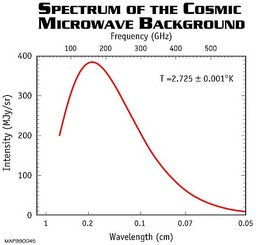

The ‘Big Bang’ is the model for the formation of our Universe in which spacetime, and the matter within it, were created from a cosmic singularity. The model suggests that in the 13.7 billion years since the Universe began, it has expanded from an extremely small but incredibly dense and hot primordial fireball, to the enormous but cold and diffuse Universe we see around us today.
The Big Bang model has its roots in the work of Lemaitre, Gamow and colleagues who, by reversing the observed expansion, concluded that the Universe must have began in an initially very hot, dense state. Fred Hoyle, a non-believer, is credited with first mockingly coining the term ‘Big Bang’, as he favoured steady state theory at the time.
According to Big Bang theory, the journey from primordial fireball to the present-day Universe involves several stages linked to the temperature of the Universe at the time. From the moment of the Big Bang up until about 3,000 years after (the radiation-dominated era), the density of radiation in the Universe was greater than the density of matter. However, in an expanding Universe, the radiation density falls faster than the matter density and the Universe became matter-dominated. The temperature of the Universe continued to fall through expansion until, after about 300,000 years, it had reached temperatures below 3,000 Kelvin. At this point, the photons no longer had sufficient energy to stop electrons and atomic nuclei from binding to form hydrogen and helium atoms, and the process of recombination began. Ever since this epoch of recombination, the astronomical structures we are familiar with today (planets, stars, galaxies) were able to form, and the Universe has continued to expand.
The Big Bang model is supported by three important observations:
- The expansion of the Universe as deduced from the distance-redshift relationship for galaxies and described by the Hubble law. Extrapolating the observed expansion backwards in time, one reaches the conclusion that at some time in the distant past, all matter in the Universe must have been contained in a small region of space.
- The abundances of the lightest elements (hydrogen, helium, deuterium, lithium) are consistent with their creation in a Big Bang event and not via subsequent nucleosynthesis in stars. In particular, the abundances of helium (the total amount is much larger than could have been produced by stellar nucleosynthesis) and deuterium (stars can only destroy deuterium) strongly suggest their synthesis in the Big Bang.
- The cosmic microwave background radiation. As a result of the expansion of the Universe, it was predicted that radiation from the Big Bang would have cooled to about 3 degrees Kelvin at the present epoch. The microwave background radiation, with a wavelength dependence extremely close to that a perfect blackbody, permeates the Universe at 2.725 Kelvin. This is completely consistent with a fireball event in which the radiation field was in thermal equilibrium, and is perhaps the most convincing evidence for the Big Bang.
|

The FIRAS data from COBE shows the spectrum of the cosmic microwave background. This matches the theoretical blackbody curve so exactly that it is impossible to distinguish the data from the curve.
Credit: NASA/COBE |

While the Big Bang model appears to broadly explain how the Universe came to be as it is today, it does not provide a complete picture of the early Universe. For example, the earliest time we can describe is t-43 seconds after the Big Bang, when the density of the Universe was 1090 kg/cm3 and the temperature close to 1032 Kelvin. Prior to this Planck time, we require quantum gravity (a yet to be devised theory connecting general relativity and quantum mechanics) in order to predict the properties of spacetime.
In addition, at about 10-35 seconds after the Big Bang, the Universe is believed to have undergone a period of inflation in which it increased in size by a factor ~1050. From about 10-33 seconds after the Big Bang, normal expansion was resumed, with the temperature falling to 1010 Kelvin after about one second. This period of inflation is not predicted by Big Bang theory, though without it, the Universe would have had to have been uncomfortably large just after the Big Bang.
Primarily for these reasons, Big Bang theory is still not universally accepted. It is, however, the most promising theory to explain how our Universe came to be (if inflation is included), and hence forms part of the current concordance model for cosmology.